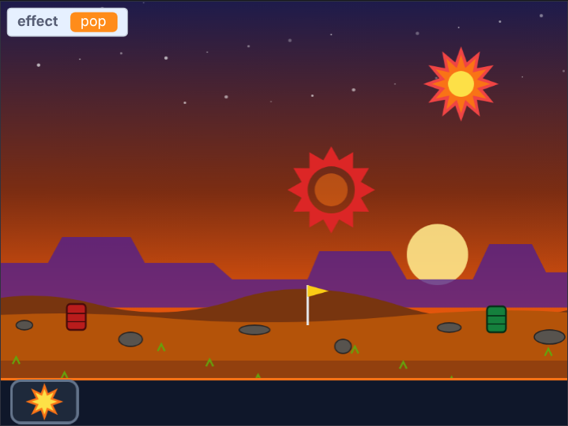
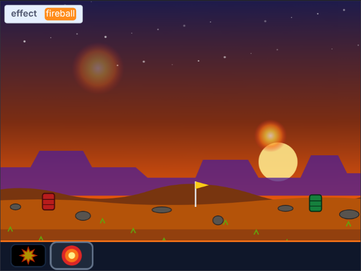
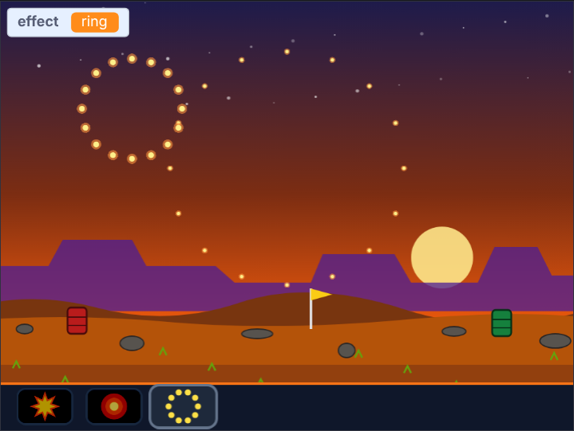
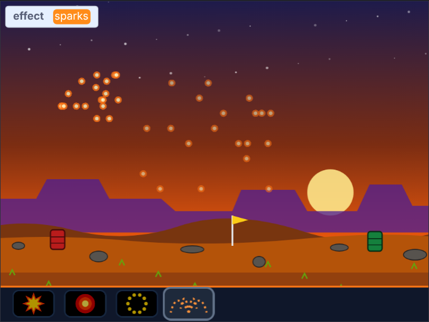
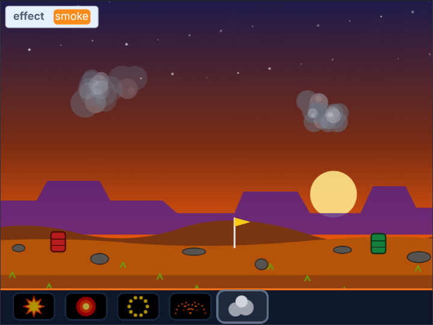
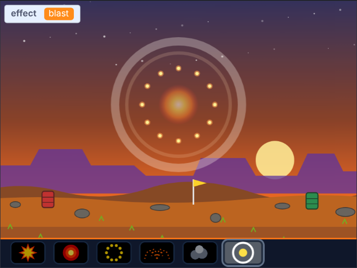
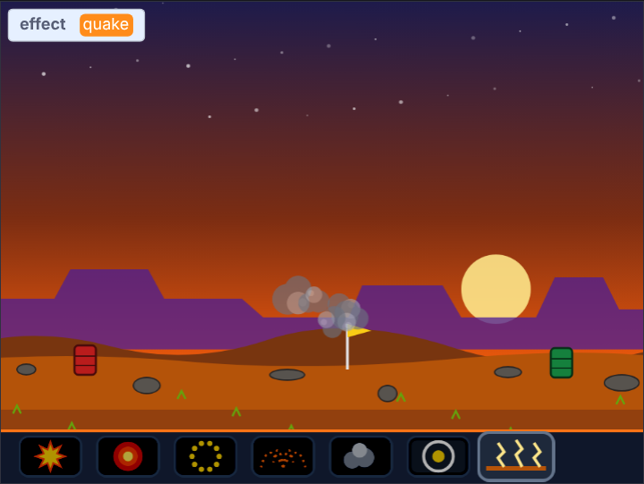
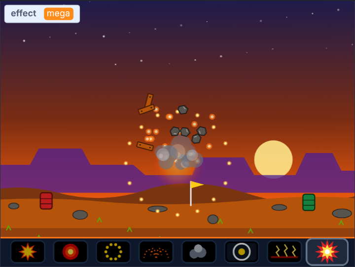

<title>Boom Lab Tutorial</title>
<meta name="claude:viewport-fit-sides" content="cover">
<link rel="preconnect" href="https://fonts.googleapis.com">
<link rel="stylesheet" href="https://fonts.googleapis.com/css2?family=Fredoka:wght@500;600&family=Atkinson+Hyperlegible:ital,wght@0,400;0,700;1,400&family=JetBrains+Mono:wght@400&display=swap">
<style>
/* Layout: one reading column; each step is a numbered section: the big idea, the blocks, a picture and a checkpoint file. */
:root {
  --bg: #f4f3fa; --surface: #ffffff; --fg: #1f1d33; --muted: #5c5a74; --line: #dddbea;
  --accent: #3b3f9e; --accent-soft: #e6e6fa; --drone: #d97706; --code-bg: #f8f7fd;
  --display: "Fredoka", "Trebuchet MS", system-ui, sans-serif;
  --body: "Atkinson Hyperlegible", "Segoe UI", system-ui, sans-serif;
  --mono: "JetBrains Mono", ui-monospace, Consolas, monospace;
}
@media (prefers-color-scheme: dark) { :root:not([data-theme="light"]) {
  --bg: #13121f; --surface: #1c1a2c; --fg: #ebe9f7; --muted: #a6a3bf; --line: #312e47;
  --accent: #a5a8ff; --accent-soft: #23244a; --drone: #fbbf24; --code-bg: #232036; color-scheme: dark; } }
:root[data-theme="dark"] {
  --bg: #13121f; --surface: #1c1a2c; --fg: #ebe9f7; --muted: #a6a3bf; --line: #312e47;
  --accent: #a5a8ff; --accent-soft: #23244a; --drone: #fbbf24; --code-bg: #232036; color-scheme: dark; }

body { background: var(--bg); color: var(--fg); font: 18px/1.6 var(--body);
  padding-left: max(16px, env(safe-area-inset-left, 0px)); padding-right: max(16px, env(safe-area-inset-right, 0px)); padding-block: 40px 72px; }
main { max-width: 760px; margin: 0 auto; display: grid; gap: 48px; }
main > *, .step > *, .stack > *, .intro > * { min-width: 0; }
h1, h2, h3 { font-family: var(--display); font-weight: 600; text-wrap: balance; margin: 0; line-height: 1.15; }
h1 { font-size: clamp(2rem, 6vw, 2.9rem); }
h2 { font-size: 1.7rem; }
h3 { font-size: 1.15rem; font-weight: 500; }
p { margin: 0; max-width: 66ch; }
a { color: var(--accent); }
code { font: 0.88em var(--mono); background: var(--code-bg); padding: 1px 5px; border-radius: 4px; overflow-wrap: anywhere; }
.eyebrow { font: 600 0.78rem var(--body); letter-spacing: 0.08em; text-transform: uppercase; color: var(--drone); }
.stack { display: grid; gap: 16px; min-width: 0; }
.intro { display: grid; gap: 14px; }
.intro p { color: var(--muted); font-size: 1.08rem; }

.plan { list-style: none; margin: 0; padding: 0; display: grid; gap: 6px; counter-reset: plan; }
.plan li { display: flex; flex-wrap: wrap; align-items: baseline; gap: 4px 12px; padding: 8px 12px; border-radius: 6px; counter-increment: plan; }
.plan li::before { content: counter(plan); font: 600 0.95rem var(--display); color: var(--muted); width: 1.4em; }
.plan .name { font-weight: 700; }
.plan a { text-decoration: none; }
.plan a:hover .name, .plan a:focus-visible .name { text-decoration: underline; }
.plan .what { color: var(--muted); flex: 1 1 220px; }

.step { display: grid; gap: 20px; border-top: 2px solid var(--line); padding-top: 32px; }
.step-head { display: flex; align-items: center; gap: 14px; }
.num { flex: none; width: 44px; height: 44px; border-radius: 50%; display: grid; place-items: center;
  background: var(--accent); color: var(--surface); font: 600 1.3rem var(--display); }
ol.do { margin: 0; padding-left: 1.3em; display: grid; gap: 8px; max-width: 66ch; }

.blocks-panel { background: var(--surface); border: 1px solid var(--line); border-radius: 8px; padding: 16px; overflow-x: auto; }
.blocks-panel .label { font: 700 0.78rem var(--body); letter-spacing: 0.06em; text-transform: uppercase; color: var(--muted); margin-bottom: 8px; }
pre.blocks { margin: 0; font: 13px var(--mono); white-space: pre; }

.note { border-left: 3px solid var(--drone); padding: 2px 0 2px 14px; color: var(--fg); }
.note b { color: var(--drone); }
figure { margin: 0; display: grid; gap: 8px; }
figure img { width: 100%; border-radius: 8px; border: 1px solid var(--line); display: block; }
figcaption { font-size: 0.9rem; color: var(--muted); }

.table-wrap { overflow-x: auto; }
table { border-collapse: collapse; font-variant-numeric: tabular-nums; min-width: 420px; }
th, td { text-align: right; padding: 6px 14px; border-bottom: 1px solid var(--line); }
th:first-child, td:first-child { text-align: left; }
th { font-size: 0.82rem; color: var(--muted); font-weight: 700; }

.checkpoint { display: flex; flex-wrap: wrap; align-items: center; gap: 10px 16px; background: var(--surface);
  border: 1px solid var(--line); border-radius: 8px; padding: 12px 16px; }
.checkpoint p { flex: 1 1 260px; color: var(--muted); font-size: 0.95rem; }
.btn { display: inline-block; font-weight: 700; text-decoration: none; color: var(--surface); background: var(--accent);
  padding: 8px 16px; border-radius: 6px; white-space: nowrap; }
.btn:hover, .btn:focus-visible { outline: 3px solid var(--accent-soft); outline-offset: 1px; }
.try { margin: 0; padding-left: 1.3em; display: grid; gap: 6px; }
svg.coords text { font: 11px var(--body); fill: var(--muted); }
.scripts { display: flex; flex-wrap: wrap; gap: 12px; align-items: flex-start; }
.scripts .blocks-panel { flex: 0 1 auto; max-width: 100%; min-width: 0; }
.tag { font-size: 0.7rem; font-weight: 700; letter-spacing: 0.04em; padding: 1px 7px; border-radius: 999px; margin-left: 6px; }
.tag.new { background: var(--accent); color: var(--surface); }
.tag.changed { border: 1px solid var(--drone); color: var(--drone); }
.flow { list-style: none; margin: 0; padding: 0; display: flex; flex-wrap: wrap; gap: 8px; counter-reset: none; }
.flow li { display: grid; gap: 2px; padding: 10px 14px; border-radius: 8px; background: var(--surface); border: 1px solid var(--line);
  flex: 1 1 130px; min-width: 0; position: relative; }
.flow li b { font: 600 1.05rem var(--display); color: var(--accent); }
.flow li span { font-size: 0.85rem; color: var(--muted); }
footer { color: var(--muted); font-size: 0.92rem; border-top: 2px solid var(--line); padding-top: 24px; }
.idea { background: var(--accent-soft); border-radius: 8px; padding: 12px 16px; display: grid; gap: 4px; max-width: 66ch; }
.make { display: grid; gap: 4px; max-width: 66ch; font-size: 0.95rem; }
.make b { color: var(--drone); }
.idea b { font: 600 1rem var(--display); color: var(--accent); }
</style>

<main>
  <header class="intro">
    <span class="eyebrow">Scratch tutorial for kids (9+) · 8 steps · basic blocks only</span>
    <h1>Boom Lab</h1>
    <p>Welcome to the test range! Build eight explosion effects, from a simple flip-book pop to a mega blast with a flash, a shockwave, sparks, smoke, a ground shake and bouncing debris. Pick an effect in the toolbar and click the sky to try it.</p>
    <p>Every step is a lab you can play with, and every step has a file you can download if you get stuck. You need the Scratch editor: <a href="https://scratch.mit.edu/projects/editor/">scratch.mit.edu/projects/editor</a>.</p>
    <div class="checkpoint">
      <p>Start here: the starter project has the sky, the ground, the explosion costumes, the flash and the toolbar. No code yet.</p>
      <a class="btn" href="https://github.com/AJosephsen/MyTemporaryJunk/raw/main/scratch/tutorials/boom-lab/starter.sb3">Download starter.sb3</a>
    </div>
  </header>

  <section class="stack" aria-label="Steps">
    <h3>The steps</h3>
    <ol class="plan">
      <li><a href="#step-1"><span class="name">Pop</span></a><span class="what">A flip-book</span></li>
      <li><a href="#step-2"><span class="name">Fireball</span></a><span class="what">Grow and fade</span></li>
      <li><a href="#step-3"><span class="name">Ring</span></a><span class="what">Clones copy your direction</span></li>
      <li><a href="#step-4"><span class="name">Sparks</span></a><span class="what">Gravity</span></li>
      <li><a href="#step-5"><span class="name">Smoke</span></a><span class="what">Slow and random</span></li>
      <li><a href="#step-6"><span class="name">Blast</span></a><span class="what">Flash and shockwave</span></li>
      <li><a href="#step-7"><span class="name">Quake</span></a><span class="what">Shake, less and less</span></li>
      <li><a href="#step-8"><span class="name">Mega</span></a><span class="what">Bounce and mix it all</span></li>
    </ol>
  </section>

  <section class="step" id="step-1">
    <div class="step-head"><span class="num">1</span><h2>Pop</h2></div>
    <div class="idea"><b>Big idea: a flip-book</b><span>The Boom sprite stays hidden and waits for a click in the sky. Then it goes to the mouse-pointer and runs <b>boom</b>, which uses <b>make 1 pop</b>: set <b>role</b> to pop and make a clone. The clone shows itself and switches to the <b>next costume</b> every 0.05 seconds: five pictures, one after the other, like a flip-book.</span></div>
    <p class="make"><span><b>Make:</b> <code>effect</code>, and <code>role</code>, <code>vx</code>, <code>vy</code> and <code>spin</code> for the Boom only, and <code>name</code> for the Button only. The custom blocks <b>make (n) (kind)</b> and <b>boom</b>, both with <b>run without screen refresh</b>.</span></p>
    <!--changed:1-->
    <ul class="do">
      <li>The Button sprite is the dark toolbar; it makes a clone for each button. Click a button to pick its effect.</li>
      <li>Click fast: every click makes its own clone, so pops can overlap.</li>
    </ul>
    <figure>
      
      <figcaption>Click the sky: pop!</figcaption>
    </figure>
    <div class="checkpoint">
      <p>Stuck? This is the project at the end of step 1.</p>
      <a class="btn" href="https://github.com/AJosephsen/MyTemporaryJunk/raw/main/scratch/tutorials/boom-lab/step1.sb3">Download step1.sb3</a>
    </div>
  </section>
  <section class="step" id="step-2">
    <div class="step-head"><span class="num">2</span><h2>Fireball</h2></div>
    <div class="idea"><b>Big idea: grow and fade</b><span>You don't always need lots of costumes. A fireball is one soft, round costume: start small, then <b>change size by 12</b> and <b>change ghost effect by 7</b>, fourteen times. It swells up and fades away.</span></div>
    <p class="make"><span><b>Make:</b> nothing new.</span></p>
    <!--changed:2-->
    <ul class="do">
      <li>Try a slower fade (a smaller ghost change) for a big, slow fireball.</li>
      <li>The ghost effect goes from 0 (solid) to 100 (invisible).</li>
    </ul>
    <figure>
      
      <figcaption>One costume, two effects: size and ghost.</figcaption>
    </figure>
    <div class="checkpoint">
      <p>Stuck? This is the project at the end of step 2.</p>
      <a class="btn" href="https://github.com/AJosephsen/MyTemporaryJunk/raw/main/scratch/tutorials/boom-lab/step2.sb3">Download step2.sb3</a>
    </div>
  </section>
  <section class="step" id="step-3">
    <div class="step-head"><span class="num">3</span><h2>Ring</h2></div>
    <div class="idea"><b>Big idea: clones copy your direction</b><span><b>make (16) (spark)</b> now turns 360 ÷ 16 degrees before each clone. A clone starts with the direction its parent had at that moment, so the 16 sparks point all the way round. Each one just <b>moves</b> forward and shrinks.</span></div>
    <p class="make"><span><b>Make:</b> nothing new: <b>make</b> changes.</span></p>
    <!--changed:3-->
    <ul class="do">
      <li>Try make 40 spark: a thick ring.</li>
      <li>Pop and fireball still work: turning a round costume changes nothing.</li>
    </ul>
    <figure>
      
      <figcaption>Sixteen sparks, sixteen directions.</figcaption>
    </figure>
    <div class="checkpoint">
      <p>Stuck? This is the project at the end of step 3.</p>
      <a class="btn" href="https://github.com/AJosephsen/MyTemporaryJunk/raw/main/scratch/tutorials/boom-lab/step3.sb3">Download step3.sb3</a>
    </div>
  </section>
  <section class="step" id="step-4">
    <div class="step-head"><span class="num">4</span><h2>Sparks</h2></div>
    <div class="idea"><b>Big idea: gravity</b><span>Embers fly out in an arc, like real sparks. Each one picks a random <b>vx</b> (sideways) and <b>vy</b> (up). Every frame it moves by vx and vy, and then <b>vy goes down by 0.6</b>. That is gravity: the ember slows down, stops and falls.</span></div>
    <p class="make"><span><b>Make:</b> nothing new: <code>vx</code> and <code>vy</code> are already there.</span></p>
    <!--changed:4-->
    <ul class="do">
      <li>Change -0.6 to -0.2: moon gravity!</li>
      <li><b>0.1 × random -50 to 50</b> gives numbers like 2.7, not only whole numbers.</li>
    </ul>
    <figure>
      
      <figcaption>Up, slower, stop, down.</figcaption>
    </figure>
    <div class="checkpoint">
      <p>Stuck? This is the project at the end of step 4.</p>
      <a class="btn" href="https://github.com/AJosephsen/MyTemporaryJunk/raw/main/scratch/tutorials/boom-lab/step4.sb3">Download step4.sb3</a>
    </div>
  </section>
  <section class="step" id="step-5">
    <div class="step-head"><span class="num">5</span><h2>Smoke</h2></div>
    <div class="idea"><b>Big idea: slow and random</b><span>Smoke is soft because nothing about it is the same: each puff has a random size, place, start time and drift. Then it slowly rises, grows and fades. Slow and random looks soft; fast and even looks hard.</span></div>
    <p class="make"><span><b>Make:</b> nothing new.</span></p>
    <!--changed:5-->
    <ul class="do">
      <li>The puffs wait a random moment before they show, so they don't all appear at once.</li>
      <li>Put smoke behind other effects later: that is what the Blast and the Quake do.</li>
    </ul>
    <figure>
      
      <figcaption>Rise, grow, fade.</figcaption>
    </figure>
    <div class="checkpoint">
      <p>Stuck? This is the project at the end of step 5.</p>
      <a class="btn" href="https://github.com/AJosephsen/MyTemporaryJunk/raw/main/scratch/tutorials/boom-lab/step5.sb3">Download step5.sb3</a>
    </div>
  </section>
  <section class="step" id="step-6">
    <div class="step-head"><span class="num">6</span><h2>Blast</h2></div>
    <div class="idea"><b>Big idea: flash and shockwave</b><span>Big explosions are made of small ones. <b>Blast</b> broadcasts <b>flash</b>, and the Flash sprite (the whole screen, warm white) shows and fades in a few frames. At the same time a <b>shockwave</b> ring grows very fast, with a fireball and a ring of sparks inside.</span></div>
    <p class="make"><span><b>Make:</b> nothing new: the Flash sprite is in the starter.</span></p>
    <!--changed:6-->
    <ul class="do">
      <li>A flash is short: it only needs a few frames to feel bright.</li>
      <li>Mix your own: add a line to the blast recipe in <b>boom</b>.</li>
    </ul>
    <figure>
      
      <figcaption>Several effects at once.</figcaption>
    </figure>
    <div class="checkpoint">
      <p>Stuck? This is the project at the end of step 6.</p>
      <a class="btn" href="https://github.com/AJosephsen/MyTemporaryJunk/raw/main/scratch/tutorials/boom-lab/step6.sb3">Download step6.sb3</a>
    </div>
  </section>
  <section class="step" id="step-7">
    <div class="step-head"><span class="num">7</span><h2>Quake</h2></div>
    <div class="idea"><b>Big idea: shake, less and less</b><span><b>Quake</b> broadcasts <b>shake</b>. The Land sprite jumps to a random spot near home, 12 times, and each time a little less far (<b>jolt</b> goes down by 1). Then it goes home. The ground is wider than the stage, so you never see its edges.</span></div>
    <p class="make"><span><b>Make:</b> <code>jolt</code> for the Land only.</span></p>
    <!--changed:7-->
    <ul class="do">
      <li>Only the ground shakes, not the toolbar: that's why the sky is the backdrop and the ground is a sprite.</li>
      <li>A shake that gets smaller feels like a real thud.</li>
    </ul>
    <figure>
      
      <figcaption>Feel the thud.</figcaption>
    </figure>
    <div class="checkpoint">
      <p>Stuck? This is the project at the end of step 7.</p>
      <a class="btn" href="https://github.com/AJosephsen/MyTemporaryJunk/raw/main/scratch/tutorials/boom-lab/step7.sb3">Download step7.sb3</a>
    </div>
  </section>
  <section class="step" id="step-8">
    <div class="step-head"><span class="num">8</span><h2>Mega</h2></div>
    <div class="idea"><b>Big idea: bounce and mix it all</b><span>Debris flies, <b>spins</b> and falls like the embers, but when it reaches the ground it <b>bounces</b>: vy turns round and halves, and it slows down sideways. <b>Mega</b> sets off everything at once: flash, shake, shockwave, fireball, ring, sparks, smoke and debris.</span></div>
    <p class="make"><span><b>Make:</b> nothing new.</span></p>
    <!--changed:8-->
    <ul class="do">
      <li>Debris is also added to the Quake.</li>
      <li>This is the whole lab. Which effect do you like best? Use it in your own games!</li>
    </ul>
    <figure>
      
      <figcaption>Everything at once.</figcaption>
    </figure>
    <div class="checkpoint">
      <p>Stuck? This is the project at the end of step 8.</p>
      <a class="btn" href="https://github.com/AJosephsen/MyTemporaryJunk/raw/main/scratch/tutorials/boom-lab/step8.sb3">Download step8.sb3</a>
    </div>
  </section>

  <section class="stack">
    <h3>Make it your own</h3>
    <ul class="try">
      <li>A colour explosion: change the <b>color</b> effect by a random amount for each spark.</li>
      <li>A slow-motion button: one variable that every clone uses as its speed.</li>
      <li>Your own recipe: a ninth button with the pieces you like best.</li>
      <li>Put an explosion in one of your games: when a ship is hit, go there and boom.</li>
    </ul>
  </section>

  <footer>Made with the Scratch workbench in this repository. The blocks on this page are drawn from the real project files, so they always match the downloads; the last step is the finished game.</footer>
</main>

<script src="https://cdn.jsdelivr.net/npm/scratchblocks@3.6.4/build/scratchblocks.min.js"></script>
<script>
  scratchblocks.renderMatching("pre.blocks", { style: "scratch3", languages: ["en"], scale: 0.75 });
</script>
